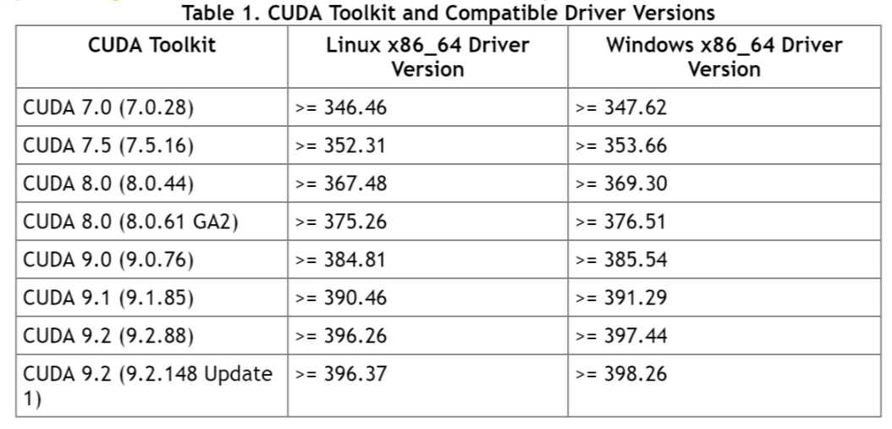
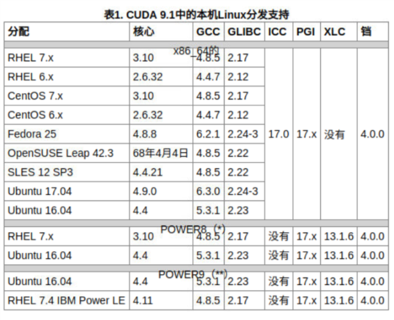
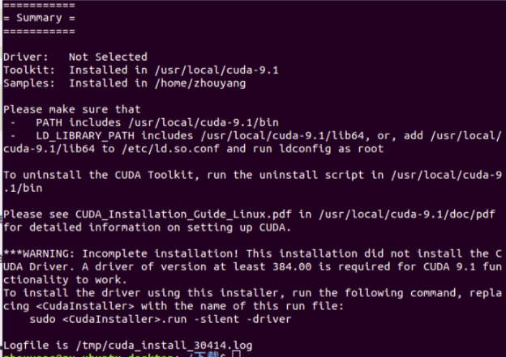
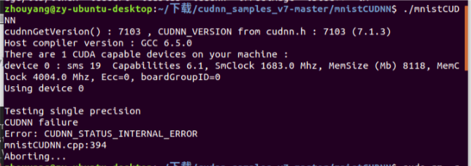

前言
前言1
很早之前就装好Ubuntu双系统，在上面学过视觉SLEAM十四讲、CLion、CMAKE语法，编写过openCV、PCL、caffeCPU版等等，后来重装了Ubuntu18，前几天用Ubuntu18配置GPU版CUDA打算跑跑深度学习，一直没配置好，现在删除了Ubuntu18重新装回Ubuntu16。
前言2
现在我有台i5-8500+GTX1070Ti的台式，现在配置这个1070的设备。发现原来写的这个博文有些连接失效，一并修改。
Ubuntu16.04无法直接安装deb包问题
sudo apt-get install gdebi
要安装的包右键->打开方式->gdebi->安装软件包
Ubuntu16.04无法获得锁问题
方法一:（无效，但记录一下）
ps -e|grep apt
sudo kill ID
方法二:（粗暴有效）
无法获得锁/var/lib/dpkg/lock-open
sudo rm /var/cache/apt/archives/lock
sudo rm /var/lib/dpkg/lock
无法获得锁/var/lib/apt/lists/lock-open
sudo dpkg –configure -a
sudo rm /var/lib/apt/lists/lock（有效）
ubuntu换源
step1：编辑/etc/apt/sources.list文件
sudo gedit /ect/apt/sources.list
//源地址： https://mirrors.tuna.tsinghua.edu.cn/help/ubuntu/
step2：更新
sudo apt-get update
sudo apt-get upgrade
安装nvidia显卡驱动
显卡驱动可参考如何安装NVIDIA显卡驱动
step1：查看显卡设备和驱动
ubuntu-drivers devices
step2：自动安装合适的显卡驱动
sudo ubuntu-drivers autoinstall
- 安装完成后要重启生效
衡量nvidia显卡驱动安装是否成功
1、终端中确认
nvidia-smi
2、设置->详细信息->About3、软件中搜索‘nvidia setting’->Prime profiles
nvidia驱动与CUDA TOOKit工具对应关系

给出参考网址CUDA RELEASE NOTES
-由于我电脑nvidia-smi显示的是384.130，对照表所以我只能选Cuda9.0.76版本。
-当前我台式nvidia-smi显示的是390.77，对照表我可以安装CUDA 9.1（9.1.85）
CUDA官网查询CUDA Toolkit相关信息
英伟达官方文档CUDA Toolkit Archive->安装指南中有对应工具版本后面的Online Documentation中的安装指南推荐看看，网上的中文教程应该就是按照这个来的。
CUDA Toolkit 包括：NVCC编译器、CUDA函数头文件及库文件，及一些辅助库
CUDA Toolkit SDK 提供CUDA分析接口函数（帮助用户分析CUDA程序）
CUDA Toolkit获取CUDA Toolkit Archive
CUDA Archive获取CUDA cuDNN Archive
注意CUDA cuDNN与CUDA Toolkit 之间的对应关系
CUDA安装指南中CUDA9.1与Linux分发版本支持：
Ubuntu18.04默认GCC-7.3.0.由于CUDA未支持GCC-7，所以需要安装低版本的5或者<=6.3.0的版本，并且设置未默认版本
查看gcc版本
gcc –version
g++ –version
gcc/g++降级
step1：下载安装gcc-6 g++-6：
sudo apt-get install gcc-6 g++-6
step2：链接实现gcc/g++降级：
cd /usr/bin
sudo rm gcc
sudo ln -s gcc-6 gcc
sudo rm g++
sudo ln -s g++-6 g++
step3:检查调整后gcc/g++版本
gcc –version
g++ –version
注意：我这样装的gcc/g++-6最后的版本是6.5.0😮很是吃惊，但是发现可以装
安装CUDA Toolkit
安装CUDA
参照对应版本的说明文档即可
sudo sh cuda_10.0.130_410.48_linux.run
补丁也按照上述命令安装
注意：出现 更多 点q accept 驱动不装 其余yes
安装CUDA过程中出现的问题
1、发现提示sample、tookit已经安装成功但是缺少一些库,提示如下：
Driver: Not Selected
Tookit: Installed in /usr/local/cuda9.1
Samples:Installed in /home/用户,but missing recommended libraries
解决方法：添加库
sudo apt-get install freeglut3-dev build-essential libx11-dev libxmu-dev libxi-dev libgl1-mesa-glx libglu1-mesa libglu1-mesa-dev
参考连接-CUDA9.1、cuDNN7在Ubuntu16.04上的安装
记着安装完补丁
CUDA安装完成后配置环境

配置环境
step1:打开profile文件
sudo gedit /etc/profile
step2:打开文件后在文件末尾添加路径(安装目录)
export PATH=/usr/local/cuda-9.1/bin:\$PATH(\转义)
export LD_LIBRARY_PATH=/usr/local/cuda-9.1/lib64$LD_LIBRARY_PATH
source /etc/profile//使修改立即生效
step3:
sudo gedit ~/.barshrc
添加
export PATH=/usr/local/cuda-9.1/bin${PATH:+:${PATH}}
export LD_LIBRARY_PATH=/usr/local/cuda-9.1/lib64${LD_LIBRARY_PATH:+:${LD_LIBRARY_PATH}}
sudo ldconfig//重启生效
阅读安装完的summary也可知道
重启>sudo reboot
##检查cuda是否安装成功
1、检测路径~/dev下有无存在名为nvidia*的多个文件，若无安装出错
ls /dev | grep nvidia*
2、检查CUDA Toolkit是否安装成功
nvcc -V（大V）
3、编译samples例子
进入Samples安装目录(就是家目录)，然后在该目录下
make -j4
在/home/用户/NVIDIA_CUDA_9.1_Samples/bin/x86_64/linux/release/运行deviceQuery程序
sudo ./deviceQuery
Pass表示通过
sudo ./bandwidthTest
Pass表示通过
安装cuDNN
应该看官方说明文档，我偷懒了
查询显卡计算能力CUDA-GPU
安装方法应该是先查询自己电脑的计算能力，然后确定cudnn版本，然后确定对应的cuda版本
cuDNN下载连接
确定cuDNN对应的版本
我安装的是cuda_9.1.85_387.26_linux.run
所以下载的cuDNN是：Download cuDNN v7.1.3 [April 17,2018],for CUDA 9.1->cuDNN v7.1.3 Library for Linux
(具体我也不知道cudnn该怎么选择😭不知道cudnn的选择与cuda安装版本间关系，也不知道cuDNN下载时是该选Library for linux还是Library for Ubuntu😵)
解压cudnn压缩包，执行或参考下面命令
sudo cp cuda/include/cudnn.h /usr/local/cuda-9.1/include
sudo cp cuda/lib64/libcudnn /usr/local/cuda-9.1/lib64
sudo chmod a+r /usr/local/cuda/include/cudnn.h /usr/local/cuda/lib64/libcudnn
配置cuDNN安装环境
step1：
sudo gedit ~/.bashrc
step2:
export LD_LIBRARY_PATH=”$LD_LIBRARY_PATH:/usr/local/cuda-9.1/lib64:/usr/local/cuda-9.1/extras/CUPTI/lib64”
export CUDA_HOME=/usr/local/cuda-9.1
export PATH=”$CUDA_HOME/bin:$PATH”
##验证cuDnn安装成功否
cudnn官方说明文档(cuDNN Developer Guide)中指出cudnn加速要求计算能力在3.0以上，所以我的凉了~
官方文档(cuDnn inatall Guide)指出了deb方式下的验证方式，直接照着做就行，现我说明Ubuntu下的验证方式：
下载mnistCUDNNcudnn_samples_v7
cd cudnn_samples_v7/mnistCUDNN
make clean && make
./mnistCUDNN
运行测试出错：
If you’re trying to test your CUDA Toolkit 8.0 and cuDNN v6.0 installation (for TensorFlow), and mnistCUDNN gives you the following error:

…that’s due to corrupted cache, which you can fix by deleting it:
sudo rm -rf ~/.nv/
./mnistCUDNN
然后就会输出成功结果。
最后说明
1、cuDnn加速只支持GPU计算能力在3.0以上的GPU加速（这一点cudnn官方文档中也有指出）；
2、cuDnn(CUDA Deep Neural Network library):是NVIDIA打造的针对深度神经网络的加速库，是一个用于深层神经网络的GPU加速库，如果你要用GPU训练模型，cuDNN不是必须的，但是一般会采用这个加速库。